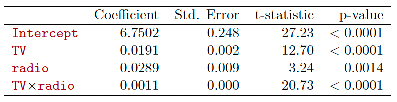
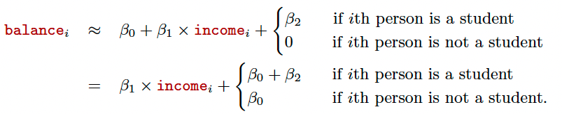
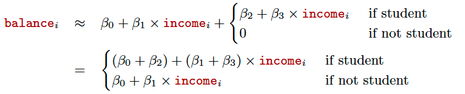
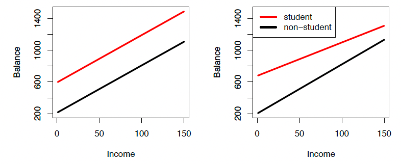

require(ISLR) #Import ISLRLoading required package: ISLRWarning: package 'ISLR' was built under R version 4.5.3Chapter 3 of the textbook Gareth James, Daniela Witten, Trevor Hastie and Robert Tibshirani, An Introduction to Statistical Learning: with Applications in R.
Part of this lecture notes are extracted from Prof. Sonja Petrovic ITMD/ITMS 514 lecture notes.
What is wrong with the linear model? It works quite well!
Yes – but sometimes the (restrictive) assumptions are violated in practice.
The relationship between the predictors and response is additive.
The relationship between the predictors and response is linear.
Previous analysis of Advertising data: both TV and radio seem associated with sales.
The above model states that the average effect on sales of a one-unit increase in TV is always \(\beta_1,\) regardless of the amount spent on radio. But suppose that spending money on radio advertising actually increases the effectiveness of TV advertising, so that the slope term for TV should increase as radio increases. In this situation, given a fixed budget of $100,000, spending half on radio and half on TV may increase sales more than allocating the entire amount to either TV or to radio.
In marketing, this is known as a synergy effect, and in statistics it is referred to as an interaction effect.
radio and TV in predicting sales:\[\begin{align*} sales & =\beta_0+\beta_1\times TV+\beta_2\times radio +\beta_3 \times (radio\times TV)+\epsilon\\ & = \beta_0+ (\beta_1+\beta_3\times radio)\times TV + \beta_2\times radio + \epsilon. \end{align*}\]

Interpretation
Sometimes it is the case that an interaction term has a very small p-value, but the associated main effects (in this case, TV and radio) do not. If we include an interaction in a model, we should also include the main effects, even if the p-values associated with their coefficients are not significant.
The rationale for this principle is that interactions are hard to interpret in a model without main effects— their meaning is changed. Specifically, the interaction terms also contain main effects, if the model has no main effect terms.
We can also have the interactions between qualitative and quantitative variables.
Consider the Credit data set, and suppose that we wish to predict balance using income (quantitative) and student (qualitative).
Without an interaction term, the model takes the form

With interactions, it takes the form

For the Credit data, the least squares lines are shown for prediction of balance from income for students and non-students. Left: The model was fit. There is no interaction between income and student. Right: The model was fit. There is an interaction term between income and student.

Let’s revisit the auto data set. Here we want to build a model as follows.
\[mpg = \beta_0 + \beta_1 \times horsepower + \beta_2 \times horsepower^2 + \epsilon\]
How to do it in R?
Call:
lm(formula = mpg ~ horsepower + horsepowerSquare, data = Auto)
Residuals:
Min 1Q Median 3Q Max
-14.7135 -2.5943 -0.0859 2.2868 15.8961
Coefficients:
Estimate Std. Error t value Pr(>|t|)
(Intercept) 56.9000997 1.8004268 31.60 <2e-16 ***
horsepower -0.4661896 0.0311246 -14.98 <2e-16 ***
horsepowerSquare 0.0012305 0.0001221 10.08 <2e-16 ***
---
Signif. codes: 0 '***' 0.001 '**' 0.01 '*' 0.05 '.' 0.1 ' ' 1
Residual standard error: 4.374 on 389 degrees of freedom
Multiple R-squared: 0.6876, Adjusted R-squared: 0.686
F-statistic: 428 on 2 and 389 DF, p-value: < 2.2e-16Actually, if it is the interaction with two different features, we just need to use *. For example, we want to check the interactions between horsepower and weight.
Call:
lm(formula = mpg ~ horsepower * weight, data = Auto)
Residuals:
Min 1Q Median 3Q Max
-10.7725 -2.2074 -0.2708 1.9973 14.7314
Coefficients:
Estimate Std. Error t value Pr(>|t|)
(Intercept) 6.356e+01 2.343e+00 27.127 < 2e-16 ***
horsepower -2.508e-01 2.728e-02 -9.195 < 2e-16 ***
weight -1.077e-02 7.738e-04 -13.921 < 2e-16 ***
horsepower:weight 5.355e-05 6.649e-06 8.054 9.93e-15 ***
---
Signif. codes: 0 '***' 0.001 '**' 0.01 '*' 0.05 '.' 0.1 ' ' 1
Residual standard error: 3.93 on 388 degrees of freedom
Multiple R-squared: 0.7484, Adjusted R-squared: 0.7465
F-statistic: 384.8 on 3 and 388 DF, p-value: < 2.2e-16Question: Why I don’t need to + horsepower + weight?
We can use the same way to construct interaction regression model with one numeric attribute and one categorical attribute.
Note: Only when these two features have interactions, our interactions model can lead to a better performance.
Split Boston data set into 80:20 as training and test. Please note you need MASS package.
Please construct an interaction regression model of response medv with crim and rm for the BostonTraining data set.
Predict medv in the BostonTest and calculate MAE and MSE.
Please construct an interaction regression model of response medv with lstat and rm for the BostonTraining data set.
Predict medv in the BostonTest and calculate MAE and MSE.
Compare these two models.
(You will learn to deal with these in another course that focuses more on using regression in your application domain.)
Revisit Auto Example
Auto data set, regression on Y=mpg vs. X=horsepower.fitLm <- lm(mpg ~ horsepower, data=Auto)mpg associated with a horsepower of \(98\)? What are the associated 95% confidence and prediction intervals? 1
24.46708 fit lwr upr
1 24.46708 23.97308 24.96108 fit lwr upr
1 24.46708 14.8094 34.12476Three sorts of uncertainty associated with the prediction of \(Y\) based on \(X_1,\dots,X_p\):
Advertising confidence
Confidence interval Quantify the uncertainty surrounding the average sales over a large number of cities.
For example:
Advertising prediction
Prediction interval Can be used to quantify the uncertainty surrounding sales for a particular city.
Note that both intervals are centered at 11,256, but that the prediction interval is substantially wider than the confidence interval, reflecting the increased uncertainty about sales for a given city in comparison to the average sales over many locations.